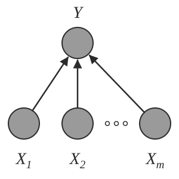
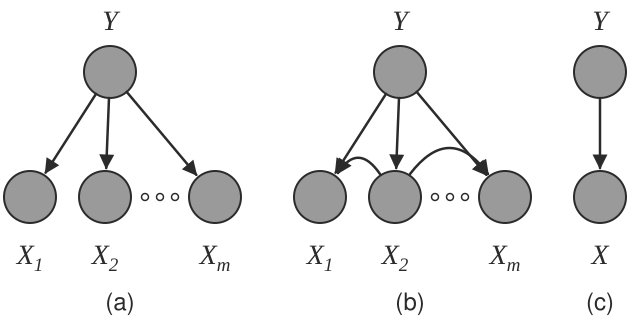
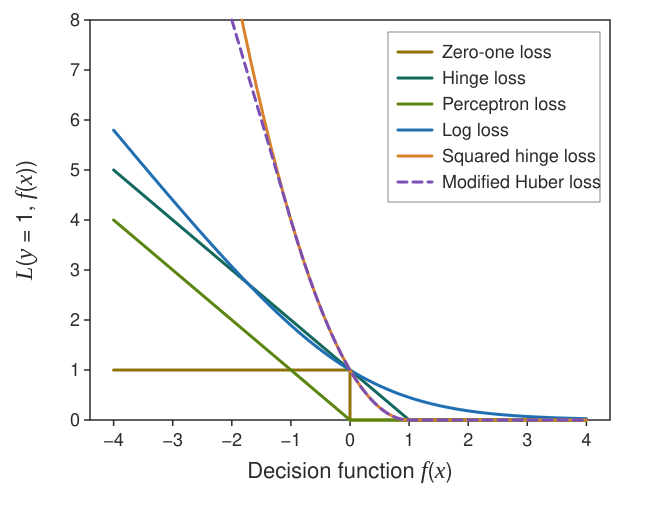
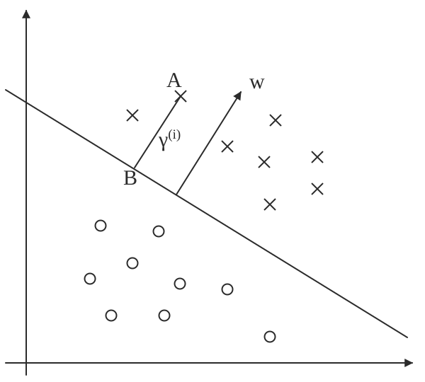

Classification#
Discriminative and generative classifiers, trees and rules, nearest neighbors, and boosting.
About this chapter
The chapter is organized by the split in the overview. Discriminative models fit \(P(Y\vert X)\) directly: logistic regression, SVMs, decision trees, rules and Gaussian processes. Generative models fit \(P(X, Y) = P(X\vert Y) P(Y)\) and get the posterior from Bayes’ rule: Gaussian class-conditioned classifiers (LDA and QDA), naive Bayes, and exponential family models. Read the binary classification table first. Perceptron, linear SVM and logistic regression share the same form, a regularizer plus a loss, and differ only in the loss.
Nearest neighbors, which keep the training data instead of fitting parameters, come after the two families. Then come the maximum likelihood calculations behind naive Bayes (Bernoulli and multinomial counts), and boosting, which combines many weak learners by reweighting data points or fitting residuals.
Chapter outline: 8 sections
- Overview2 figuresGenerative models assume something about how X is produced, which costs bias but helps them converge faster and handle missing features.
- Binary classification1 interactive1 figureEach model predicts \hat y = \text{sign}(\theta^T x).
- Multiclass classificationTwo routes: combine several binary classifiers (one-against-all, one-vs-one), or train a single model that scores every class and predicts the highest score (multiclass perceptron, multiclass SVM, softmax).
- Discriminative1 figure
- Generative1 interactive
- Instance-based (nearest neighbors)No model is fit.
- Likelihood calcsThe maximum likelihood estimates behind naive Bayes on text: set the derivative of the log likelihood to zero, and the estimates come out as observed fractions.
- Boosting1 interactiveBoosting trains weak learners one after another, each focused on what the previous ones got wrong.
Overview#
Generative models assume something about how \(X\) is produced, which costs bias but helps them converge faster and handle missing features. Discriminative models assume less and usually reach a lower asymptotic error.
regressors don’t classify well
e.g. outliers skew fit
asymptotic classifier - assumes infinite data
linear classifer \(\implies\) boundaries are hyperplanes
discriminative - model \(P(Y\vert X)\) directly

Fig. 52 Figure 1. Discriminative model. The features X₁, …, Xₘ point to the label Y, so only P(Y | X) is modeled.#
usually lower bias \(\implies\)smaller asymptotic error
slow convergence ~ \(O(p)\)
generative - model \(P(X, Y) = P(X\vert Y) P(Y)\)

Fig. 53 Figure 2. Generative models, where the label Y points to the features. (a) Naive Bayes, with features conditionally independent given Y. (b) The same with some dependence between features. (c) All features as one node X.#
usually higher bias \(\implies\) can handle missing data
this is because we assume some underlying X
fast convergence ~ \(O[\log(p)]\)
decision theory - models don’t require finding \(p(y \vert x)\) at all


Binary classification#
Each model predicts \(\hat y = \text{sign}(\theta^T x)\). They differ only in the loss charged for each example’s margin \(y_i \theta^T x_i\), plus whether a regularizer keeps \(\theta\) small.
\(\hat{y} = \text{sign}(\theta^T x)\)
usually \(\theta^Tx\) includes bias term, but generally we don’t want to regularize bias
Model |
\(\mathbf{\hat{\theta}}\) objective (minimize) |
|---|---|
Perceptron |
\(\corange{\sum_i \max(0, -y_i \cdot \theta^T x_i)}\) |
Linear SVM |
\(\cblue{\theta^T\theta} + \corange{C \sum_i \max(0,1-y_i \cdot \theta^T x_i)}\) |
Logistic regression |
\(\cblue{\theta^T\theta} + \corange{C \sum_i \log[1+\exp(-y_i \cdot \theta^T x_i)]}\) |
regularizer + loss
svm, perceptron use +1/-1, logistic use 1/0
perceptron - tries to find separating hyperplane
whenever misclassified, update w
can add in delta term to maximize margin

Fig. 54 Figure 3. Each loss for a positive example (y = 1) as a function of the score f(x). The 0-1 loss is a step at 0. The perceptron loss is zero once the point is on the right side, the hinge loss keeps charging until f(x) = 1, and the log loss never reaches zero.#

Multiclass classification#
Two routes: combine several binary classifiers (one-against-all, one-vs-one), or train a single model that scores every class and predicts the highest score (multiclass perceptron, multiclass SVM, softmax).
reducing multiclass (K categories) to binary
one-against-all
train K binary classifiers
class i = positive otherwise negative
take max of predictions
one-vs-one = all-vs-all
train \(C(K, 2)\) binary classifiers
labels are class i and class j
inference - any class can get up to k-1 votes, must decide how to break ties
flaws - learning only optimizes local correctness
single classifier - one hot vector encoding
multiclass perceptron (Kesler)
if label=i, want \(\theta_i ^Tx > \theta_j^T x \quad \forall j\)
if not, update \(\theta_i\) and \(\theta_j\)* accordingly
kessler construction
\(\theta = [\theta_1 ... \theta_k]\)
want \(\theta_i^T x > \theta_j^T x \quad \forall j\)
rewrite \(\theta^T \phi (x,i) > \theta^T \phi (x,j) \quad \forall j\)
here \(\phi (x, i)\) puts x in the ith spot and zeros elsewhere
\(\phi\) is often used for feature representation
define margin: \(\Delta (y,y') = \begin{cases} \delta& if \: y \neq y' \\ 0& if \: y=y'\end{cases}\)
check if \(y=\text{argmax}_{y'} \theta^T \phi(x,y') + \delta (y,y')\)
multiclass SVMs (Crammer & Singer)
minimize total norm of weights s.t. true label score is at least 1 more than second best label
multinomial logistic regression = multi-class log-linear model (softmax on outputs)
we control the peakedness of this by dividing by stddev
Discriminative#
Logistic regression#
Logistic regression models \(Y\) as Bernoulli with \(p = \text{logistic}(\theta^T x)\), so the log odds are linear in \(x\). It is fit by maximum likelihood, and the weights need a penalty, since otherwise they can go to infinity.
\(p(Y=1\vert x, \theta) = \text{logistic}(\theta^Tx)\)
assume Y ~ \(\text{Bernoulli}(p)\) with \(p=\text{logistic}(\theta^Tx\))
can solve this online with GD of likelihood
better to solve with iteratively reweighted least squares
\(Logit(p) = \log[p / (1-p)] = \theta^Tx\)
multiway logistic classification
assume \(P(Y^k=1\vert x, \theta) = \frac{e^{\theta_k^Tx}}{\sum_i e^{\theta_i^Tx}}\), just as arises from class-conditional exponential family distributions
logistic weight change represents change in odds
fitting requires penalty on weights, otherwise they might not converge (i.e. go to infinity)
Binary models#
Other links from the linear score \(\theta^T x\) to a probability: the Gaussian CDF (probit) instead of the logistic, and exponential forms such as the noise-OR model, where \(Y\) is an OR of causes that can each fail.
probit (binary) regression
\(p(Y=1\vert x, \theta) = \phi(\theta^Tx)\) where \(\phi\) is the Gaussian CDF
pretty similar to logistic
noise-OR (binary) model
consider \(Y = X_1 \lor X_2 \lor … X_m\) where each has a probability of failing
define \(\theta\) to be the failure probabilities
\(p(Y=1\vert x, \theta) = 1-e^{-\theta^Tx}\)
other (binary) exponential models
\(p(Y=1\vert x, \theta) = 1-e^{-\theta^Tx}\) but x doesn’t have to be binary
complementary log-log model: \(p(Y=1\vert x, \theta) = 1-\text{exp}[e^{-\theta^Tx}]\)
SVMs#
The margin is the distance from the separating hyperplane to the closest training points. Fixing the functional margin at 1 turns maximizing it into minimizing \(\vert\vert\theta\vert\vert^2\), a quadratic program. Its dual only uses dot products, so a kernel can replace them.
svm benefits
maximum margin separator generalizes well
kernel trick makes it very nonlinear
nonparametric - retains training examples (although often get rid of many)
at test time, can’t just store w - have to store support vectors

Fig. 55 Figure 4. The geometric margin γ⁽ⁱ⁾ of a point A is its distance to the separating line, measured along w, which is perpendicular to the line. The SVM maximizes the smallest of these distances.#
\(\hat{y} =\begin{cases} 1 &\text{if } w^Tx +b \geq 0 \\ -1 &\text{otherwise}\end{cases}\)
- \[\begin{split}\hat{\theta} = \text{argmin} \:\frac{1}{2} \vert \vert \theta\vert \vert ^2 \\s.t. \: y^{(i)}(\theta^Tx^{(i)}+b)\geq1, i = 1,...,m\end{split}\]
functional margin \(\gamma^{(i)} = y^{(i)} (\theta^T x +b)\)
limit the size of \((\theta, b)\) so we can’t arbitrarily increase functional margin
function margin \(\hat{\gamma}\) is smallest functional margin in a training set
geometric margin = functional margin / \(\vert \vert \theta \vert \vert \)
if \(\vert \vert \theta \vert \vert =1\), then same as functional margin
invariant to scaling of w
derived from maximizing margin: \(\max \: \gamma \\\: s.t. \: y^{(i)} (\theta^T x^{(i)} + b) \geq \gamma, i=1,..,m\\ \vert \vert \theta\vert \vert =1\)
difficult to solve, especially because of \(\vert \vert w\vert \vert =1\) constraint
assume \(\hat{\gamma}=1\) ~ just a scaling factor
now we are maximizing \(1/\vert \vert w\vert \vert \)
soft margin classifier - allows misclassifications
assigns them penalty proportional to distance required to move them back to correct side
min \(\frac{1}{2}\vert \vert \theta\vert \vert ^2 \cblue{ + C \sum_i^n \epsilon_i} \\s.t. y^{(i)} (\theta^T x^{(i)} + b) \geq 1 \cblue{- \epsilon_i}, i=1:m \\ \cblue{\epsilon_i \geq0, 1:m}\)
large C can lead to overfitting
benefits
number of parameters remains the same (and most are set to 0)
we only care about support vectors
maximizing margin is like regularization: reduces overfitting
actually solve dual formulation (which only requires calculating dot product) - QP
replace dot product \(x_j \cdot x_k\) with kernel function \(K(x_j, x_k)\), that computes dot product in expanded feature space
linear \(K(x,z) = x^Tz\)
polynomial \(K (x, z) = (1+x^Tz)^d\)
radial basis kernel \(K (x, z) = \exp(-r\vert \vert x-z\vert \vert ^2)\)
transforming then computing is O(\(m^2\)), but this is just \(O(m)\)
practical guide
use m numbers to represent categorical features
scale before applying
fill in missing values
start with RBF
valid kernel: kernel matrix is Psd

Decision trees / rfs - Russell & Norvig 18.3; Hastie, Tibshirani & Friedman 9.2.1-9.2.3#
Trees are grown greedily, one split at a time, then pruned. A single tree has high variance, so most of the section is about fixing that: pruning, bagging, and random forests, which also sample the features at each split.
from “Artificial Intelligence - A Modern Approach” and “The Elements of Statistical Learning”
follow rules: predict based on prob distr. of points in same leaf you end up in
inductive bias
prefer small trees
prefer tres with high IG near root
good for certain types of problems
instances are attribute-value pairs
target function has discrete output values
disjunctive descriptions may be required
training data may have errors
training data may have missing attributes
greedy - use statistical test to figure out which attribute is best
split on this attribute then repeat
growing algorithm
information gain - decrease in entropy
weight resulting branches by their probs
biased towards attributes with many values
use GainRatio = Gain/SplitInformation
can incorporate SplitInformation - discourages selection of attributes with many uniformly distributed values
sometimes SplitInformation is very low (when almost all attributes are in one category)
might want to filter using Gain then use GainRatio
regression tree
must decide when to stop splitting and start applying linear regression
must minimize SSE
can get stuck in local optima
avoid overfitting
empirically, early stopping is worse than overfitting then pruning (bc it doesn’t see combinations of useful attributes)
overfit then prune - proven more succesful
reduced-error pruning - prune only if doesn’t decrease error on validation set
\(\chi^2\) pruning - test if each split is statistically significant with \(\chi^2\) test
rule post-pruning = cost-complexity pruning
infer the decision tree from the training set, growing the tree until the training data is fit as well as possible and allowing overfitting to occur.
convert the learned tree into an equivalent set of rules by creating one rule for each path from the root node to a leaf node.
these rules are easier to work with, have no structure
prune (generalize) each rule by removing any preconditions that result in improving its estimated accuracy.
sort the pruned rules by their estimated accuracy, and consider them in this sequence when classifying subsequent instances.
incorporating continuous-valued attributes
choose candidate thresholds which separate examples that differ in their target classification
just evaluate them all
missing values
could fill in most common value
could assign values probabilistically
differing costs
can bias the tree to favor low-cost attributes
ex. divide gain by the cost of the attribute
high variance - instability - small changes in data yield changes to tree
many trees
bagging = bootstrap aggregation - an ensemble method
bootstrap - resampling with replacement
train multiple models by randomly drawing new training data
bootstrap with replacement can keep the sampling size the same as the original size
random forest - for each split of each tree, choose from only m of the p possible features
smaller m decorrelates trees, reduces variance
RF with m=p \(\implies\) bagging
voting
consensus: take the majority vote
average: take average of distribution of votes
reduces variance, better for improving more variable (unstable) models
adaboost - weight models based on their performance
optimal classification trees - simultaneously optimize all splits, not one at a time
importance scores
dataset-level
for all splits where the feature was used, measure how much variance reduced (either summed or averaged over splits)
the sum of importances is scaled to 1
prediction-level: go through the splits and add up the changes (one change per each split) for each features
note: this bakes in interactions of other variables
ours: only apply rules based on this variable (all else constant)
why not perturbation based?
trees group things, which can be nice
trees are unstable
Decision rules#
A rule is an if-then on a few features. Rules trade support (how many points a rule covers) against accuracy, and are learned one feature at a time (oneR), one rule at a time (sequential covering), or from mined patterns. RuleFit uses rules from trees as features in a sparse linear model.
if-thens, rule can contain ands
good rules have large support and high accuracy (they tradeoff)
decision list is ordered, decision set is not (requires way to resolve rules)
most common rules: Gini - classification, variance - regression
ways to learn rules
oneR - learn from a single feature
sequential covering - iteratively learn rules and then remove data points which are covered
ex rule could be learn decision tree and only take purest node
bayesian rule lists - use pre-mined frequent patterns
generally more interpretable than trees, but doesn’t work well for regression
features often have to be categorical
rulefit
learns a sparse linear model with the original features and also a number of new features that are decision rules
train trees and extract rules from them - these become features in a sparse linear model
feature importance becomes a little stickier….
Gaussian processes#
A Gaussian process puts a multivariate Gaussian on the function’s values, with a kernel as the covariance. Predicting means conditioning that Gaussian on the observed values.
model the relationship between a function’s values at different inputs as a multivariate gaussian
the covariance of the gaussisan is given by a kernel (e.g. rbf kernel says that nearby function values are correlated = smooth function)
when you make predictions, you condition on the values you see to get the distribution of outputs for other values
Generative#
Gaussian class-conditioned classifiers#
Model each class as a Gaussian and apply Bayes’ rule. The posterior is a sigmoid (softmax for many classes). Its boundary is linear when the classes share one covariance (LDA) and quadratic when each class has its own (QDA).
binary case: posterior probability \(p(Y=1\vert x, \theta)\) is a sigmoid \(\frac{1}{1+e^{-z}}\) where \(z = \beta^Tx+\gamma\)
multiclass extends to softmax function: \(\frac{e^{\beta_k^Tx}}{\sum_i e^{\beta_i^Tx}}\) - \(\beta\)s can be used for dim reduction
probabilistic interpretation
assumes classes are distributed as different Gaussians
it turns out this yields posterior probability in the form of sigmoids / softmax
only a linear classifier when covariance matrices are the same (LDA)
otherwise a quadratic classifier (like QDA) - decision boundary is quadratic
MLE for estimates are pretty intuitive
decision boundary are points satisfying \(P(C_i\vert X) = P(C_j\vert X)\)
regularized discriminant analysis - shrink the separate covariance matrices towards a common matrix
\(\Sigma_k = \alpha \Sigma_k + (1-\alpha) \Sigma\)
parameter estimation: treat each feature attribute and class label as random variables
assume distributions for these
for 1D Gaussian, just set mean and var to sample mean and sample var
can use directions for dimensionality reduction (class-separation)
Naive bayes classifier#
The naive assumption is that features are independent given the class. Then \(P(X_1, ..., X_p\vert Y)\) factors into \(p\) one-dimensional distributions, so the number of distributions to learn grows with the sum of the feature sizes instead of their product.
assume multinomial \(Y\)
with clever tricks, can produce \(P(Y^i=1\vert x, \eta)\) again as a softmax
let \(y_1,...y_l\) be the classes of Y
want Posterior \(\cpurple{P(Y\vert X)} = \frac{\cblue{P(X\vert Y)}(\corange{P(Y)}}{\cgreen{P(X)}}\)
likelihood, prior, evidence
MAP rule - maximum a posterior rule
use prior P(Y)
given x, predict \(\hat{y}=\text{argmax}_y \cpurple{P(y\vert X_1,...,X_p)}=\text{argmax}_y \cblue{P(X_1,...,X_p\vert y)} \corange{P(y)}\)
generally ignore constant denominator
naive assumption - assume that all input attributes are conditionally independent given y
\(P(X_1,...,X_p\vert Y) = P(X_1\vert Y)\cdot...\cdot P(X_p\vert Y) = \prod_i P(X_i\vert Y)\)
learning
learn \(L\) priors \(P(y_1),P(y_2),...,P(y_l)\)
for i in 1:\(\vert Y \vert\)
learn \(P(X \vert y_i)\)
for discrete case we store \(P(X_j\vert y_i)\), otherwise we assume a prob. distr. form
naive: \(\vert Y\vert \cdot (\vert X_1\vert + \vert X_2\vert + ... + \vert X_p\vert )\) distributions
otherwise: \(\vert Y\vert \cdot (\vert X_1\vert \cdot \vert X_2\vert \cdot ... \cdot \vert X_p\vert )\)
smoothing - used to fill in \(0\)s
\(P(x_i\vert y_j) = \frac{N(x_i, y_j) +1}{N(y_j)+\vert X_i\vert }\)
then, \(\sum_i P(x_i\vert y_j) = 1\)
Exponential family class-conditioned classifiers#
The Gaussian result generalizes: if every class-conditional distribution is in the exponential family, the posterior is a logistic function of a linear function of \(x\).
includes Gaussian, binomial, Poisson, gamma, Dirichlet
\(p(x\vert \eta) = \text{exp}[\eta^Tx - a(\eta)] h(x)\)
for classification, anything from exponential family will result in posterior probability that is logistic function of a linear function of x
Text classification#
Naive Bayes on bag-of-words vectors, which ignore word order. In practice the probabilities are summed as logs, log prior plus log likelihood, so the product of many small numbers doesn’t underflow to 0.
bag of words - represent text as a vector of word frequencies X
remove stopwords, stemming, collapsing multiple - NLTK package in python
assumes word order isn’t important
can store n-grams
multivariate Bernoulli: \(P(X\vert Y)=P(w_1=true,w_2=false,...\vert Y)\)
multivariate Binomial: \(P(X\vert Y)=P(w_1=n_1,w_2=n_2,...\vert Y)\)
this is inherently naive
time complexity
training O(n*average_doc_length_train+\(\vert c\vert \vert dict\vert \))
testing O(\(\vert Y\vert \) average_doc_length_test)
implementation
have symbol for unknown words
underflow prevention - take logs of all probabilities so we don’t get 0
\(y = \text{argmax }\corange{\log \:P(y)} + \cblue{\sum_i \log \: P(X_i\vert y)}\)
log prior + log likelihood
Instance-based (nearest neighbors)#
No model is fit. A new point is labeled by a vote of the closest training points, so the choice of distance does all the work.
also called lazy learners = nonparametric models
make Voronoi diagrams
can take majority vote of neighbors or weight them by distance
distance can be Euclidean, cosine, or other
should scale attributes so large-valued features don’t dominate
Mahalanobois distance metric accounts for covariance between neighbors
in higher dimensions, distances tend to be much farther, worse extrapolation
sometimes need to use invariant metrics
ex. rotate digits to find the most similar angle before computing pixel difference
could just augment data, but can be infeasible
computationally costly so we can approximate the curve these rotations make in pixel space with the invariant tangent line
stores this line for each point and then find distance as the distance between these lines
comparisons
error rate of 1 NN is never more than twice that of Bayes error
Likelihood calcs#
The maximum likelihood estimates behind naive Bayes on text: set the derivative of the log likelihood to zero, and the estimates come out as observed fractions.
Single Bernoulli#
\(L(p) = P\)[Train | Bernoulli(p)]= \(P(X_1,...,X_n\vert p)=\prod_i P(X_i\vert p)=\prod_i p^{X_i} (1-p)^{1-X_i}\)
\(=p^x (1-p)^{n-x}\) where x = \(\sum x_i\)
\(\log[L(p)] = \log[p^x (1-p)^{n-x}]=x \log(p) + (n-x) \log(1-p)\)
\(0=\frac{dL(p)}{dp} = \frac{x}{p} - \frac{n-x}{1-p} = \frac{x-xp - np+xp}{p(1-p)}=x-np\)
\(\implies \hat{p} = \frac{x}{n}\)
Multinomial#
\(L(\theta) = P(x_1,...,x_n\vert \theta_1,...,\theta_p) = \prod_i^n P(d_i\vert \theta_1,...\theta_p)=\prod_i^n factorials \cdot \theta_1^{x_1},...,\theta_p^{x_p}\)- ignore factorials because they are always same
require \(\sum \theta_i = 1\)
\(\implies \theta_i = \frac{\sum_{j=1}^n x_{ij}}{N}\) where N is total number of words in all docs
Boosting#
Boosting trains weak learners one after another, each focused on what the previous ones got wrong. AdaBoost reweights the data points; gradient boosting fits the residuals. The table lists the loss each variant minimizes.
adaboost
freund & schapire
reweight data points based on errs of previous weak learners, then train new classifiers
classify as an ensemble
gradient boosting
leo breiman
actually fits the residual errors made by the previous predictors
newer algorithms for gradient boosting (speed / approximations)
xgboost (2014 - popularized around 2016)
implementation of gradient boosted decision trees designed for speed and performance
things like caching, etc.
light gbm (2017)
can get gradient of each point wrt to loss - this is like importance for point (like weights in adaboost)
when picking split, filter out unimportant points
Catboost (2017)
boosting with different cost function (\(y \in \{-1, 1\}\), or for \(L_2\)Boost, also \(y \in \mathbb R\))
Adaboost
LogitBoost
\(L_2\)Boost
\(\exp(y\hat{y})\)
\(\log_2 (1 + \exp(-2y \hat y ))\)
\((y - \hat y)^2 / 2\)
Key ideas
Discriminative models fit \(P(Y\vert X)\) and usually reach a lower asymptotic error; generative models fit \(P(X, Y)\), converge faster and can handle missing data.
Perceptron, linear SVM and logistic regression all minimize a regularizer plus a loss on the margin \(y_i \theta^T x_i\), and differ only in the loss.
The SVM maximizes the margin, which acts like regularization, and its dual uses only dot products, so a kernel can replace them.
A single decision tree has high variance; pruning, bagging and random forests reduce it.
Gaussian class-conditioned classifiers give a sigmoid or softmax posterior, with a linear boundary when the classes share a covariance (LDA) and a quadratic one otherwise (QDA).
Boosting combines weak learners trained one after another, by reweighting the points (AdaBoost) or by fitting residuals (gradient boosting).